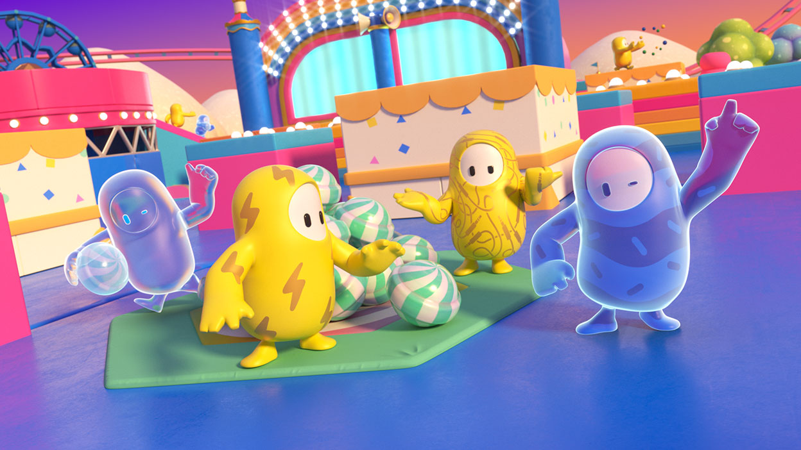
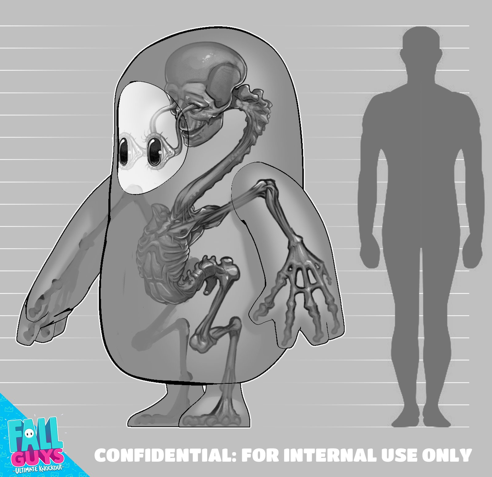
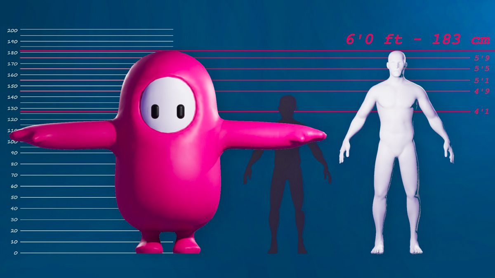
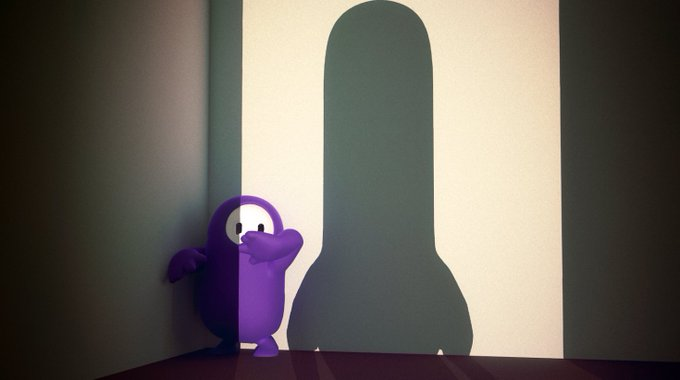
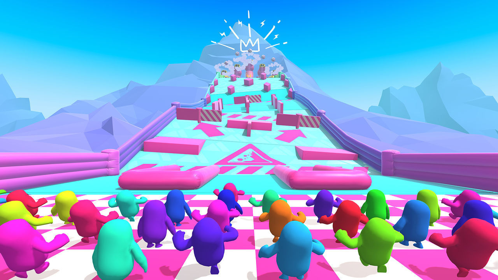
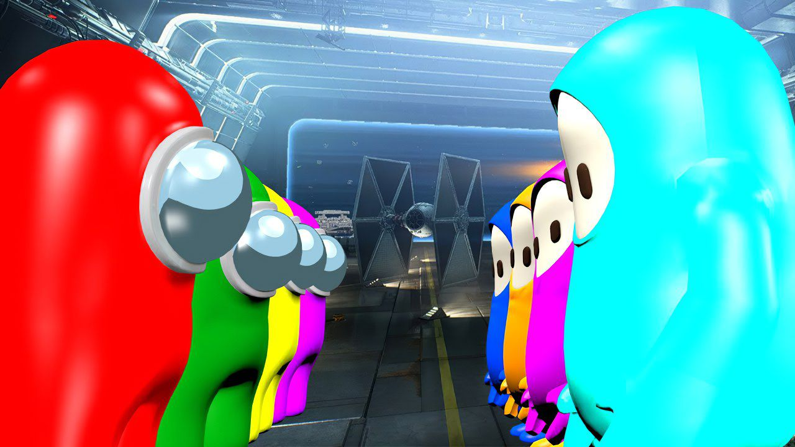
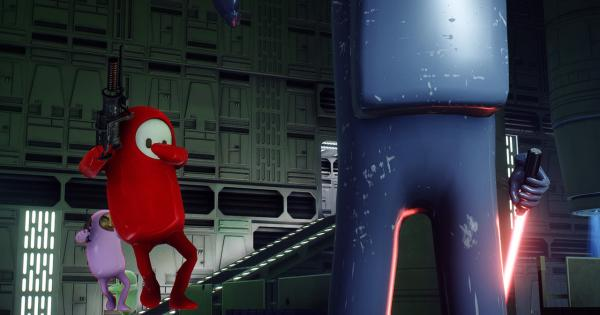

HISTORIA

¿Qué son los Fall Guys?
los Fall guys son seres de un planeta lejano que compiten en una serie de juegos y pistas de manera interminable.
los Fall guys viven en un planeta donde unicamente hay circuitos de juegos y pistas, en el cual los fall guys compiten entre ellos
para ver quien es el mejor.
Los Fall guys no tienen un nombre, ellos socializan entre ellos y se divierten en los juegos y pistas, son competitivos, algunos son mas
amigables que otros, trabajan en equipo y colaboran entre ellos para poder ganar.
Estan diseñados para competir, por lo que pueden pasar horas corriendo y saltando sin cansarse ni pasar hambre.
El valor de un Fall guy se mide por cuantas veces ha ganado un juego o pista, los fall guys mas respetados son los que mas veces han ganado
|
ANATOMIA
¿Comó es la anatomia de un Fall guy?
En el interior de un Fall guy promedio podemos observar la estructura esquelética de un ser humano, pero con algunas significativas diferencias,
el Fall guys presenta unas malformidades en su anatomia; Este tiene una postura mas erguida, huesos fusionados, extremidades mas cortas, manos y pies grandes,
tiene grandes ojos donde los globos oculares sobresaliendo de sus cavidades conectando con el cerebro,

No podemos determinar si el precede del ser humano o si es un ser humano con deformidades, Los Fall guys logran vivir una eternidad,
por lo que no que no requieren reproducirse por lapsos largos de tiempo.
ademas de que estos se alimentan por los pies, al no tener boca, estos se desarrollaron de tal manera que absorben los nutrientes
necesarios por el suelo.
Los Fall guys no tienen organos reproductores,por lo que estos se reproducen por medio de la partenogénesis.
que es un tipo de reproducción unisexual en el que las hembras originan descendencia sin fecundación por los machos.

La estatura de un fall guy promedio es de 1.82 metros (6 pies) comparada a la del ser humano, por lo que su considerable tamaño lo hace un poco mas pesado.
No hay una manera de reconocer el genero del Fall guy, debido a que ambos tienen las mismas caracteristicas, solamente ellos lo pueden distinguir,
ya que usualmente ellos pueden usar vestimenta de ambos generos sin ningun problema.
El fall guys mas alto llega a medir 2.44 metros (8 pies).

Los Fall guys regularmente suelen andar desnudos en las competencias, ya que no lo requieren, pero disfrutan mucho de disfrazarse y utilizar todo tipo de ropa y
accesorios extravagantes, sobre todo de la cultura polular terrestre.
|
COMPETICIONES
¿por que los fall guys compiten entre ellos?
los fall guys transmiten por TV sus competencias por todo el universo por lo que todas sus carreras son vistas a nivel
universal.
La estación de TV que transmite las carreras de los fall guys es llamada "Fall guys TV puede ser sintonizada
en cualquier planeta del universo, solo debe ser sintonizada correctamente.
Los fall guys viven para competir, lo hacen las 24 horas del día, los 7 días de la semana.
O están compitiendo o esperando para volver a competir.

Los fall guys no pueden morir, cuando un fall guy pierde son enviados a una especie de purgatorio donde caen indefinidamente
donde tienen tiempo para pensar en lo que hicieron mal,
donde tienen un momento de serenidad donde despues vuelven al podio a celebrar sus logros.
Debido a que no tienen una nececidad de crecer su población, los Fall guys llegan a utilizar sus huevos en sus competiciones por equipos, sin preocupación
de que estos se rompan o se dañen.
|
GUERRA CONTRA EL IMPOSTOR
¿Que sucedió en el dia D?
Una de las batallas mas legendarias y persistentes de todo el universo ha sido la batalla entre los fall guys y los impostores,

estos ultimos llegaron al planeta de los Fall guys con intenciones de colonizar, lo cual gracias al trabajo en equipo de los fall guys lograron impedir
el avance de los impostores, desterrando a estos ultimos al espacio,

Los fall guys y los impostores llevan en guerra varios milenios, se calcula que han ganado mas de 1000 batallas contra los impostores,
aun hay impostores entre los fall guys, esperando el momento exacto para volver a atacar.
|